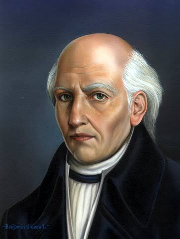
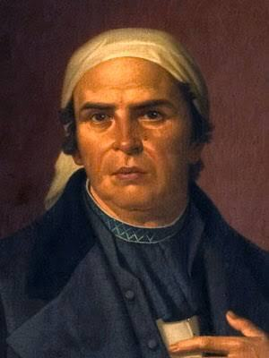
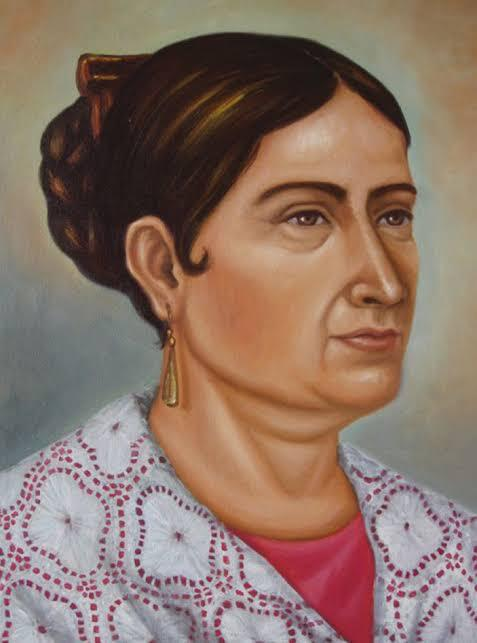
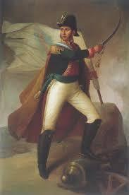
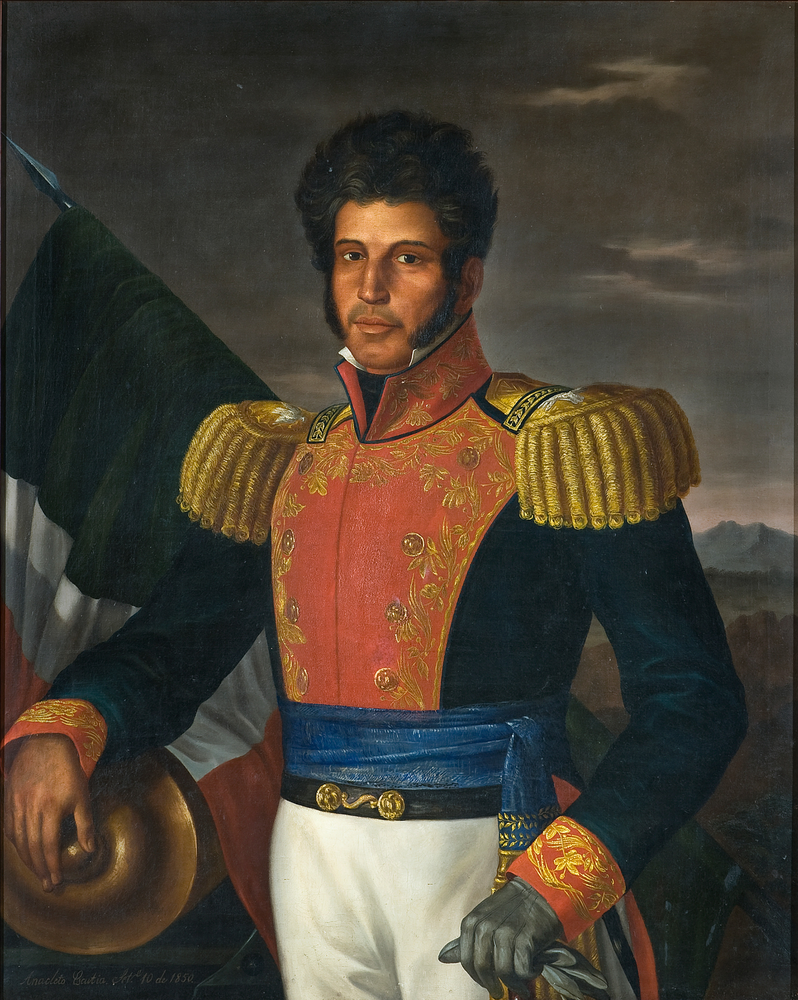
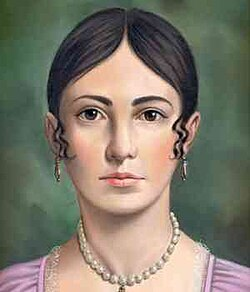

Personajes Ilustres

Miguel Hidalgo y Costilla
"El Padre de la Patria". Cura erudito e impulsor del levantamiento armado con el estandarte de la Virgen de Guadalupe[cite: 1].

José María Morelos y Pavón
"El Siervo de la Nación". Estratega militar brillante que redactó Los Sentimientos de la Nación, sentando las bases institucionales del país[cite: 1].

Josefa Ortiz de Domínguez
"La Corregidora". Pieza clave de la conspiración de Querétaro; su aviso oportuno permitió iniciar el movimiento antes de ser descubiertos[cite: 1].

Ignacio Allende
Capitán de las milicias realistas que se unió a la causa rebelde, principal organizador militar de la primera etapa del movimiento[cite: 1].

Vicente Guerrero
Líder insurgente en la etapa de resistencia que mantuvo viva la lucha en el sur y pactó la paz para lograr la consumación[cite: 1].

Leona Vicario
"La Madre de la Patria". Periodista y financista de la causa insurgente. Transmitió información clave en código a los rebeldes y financió armas y provisiones con su riqueza[cite: 1].